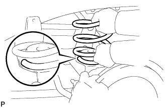
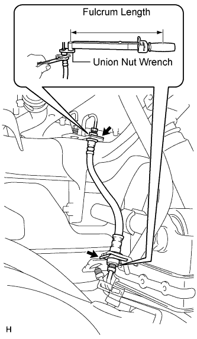
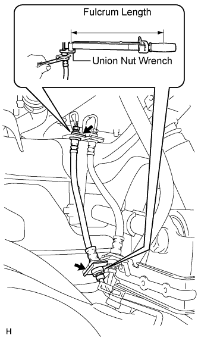
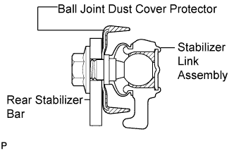
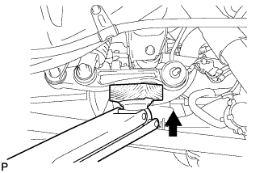

REAR COIL SPRING > INSTALLATION |
| 1. INSTALL HOLLOW SPRING SUB-ASSEMBLY |
Install the hollow spring to the frame.
| 2. INSTALL REAR COIL SPRING LH |
 |
Install the coil spring.
| 3. TEMPORARILY INSTALL REAR SHOCK ABSORBER ASSEMBLY LH |
 |
Temporarily install the lower side of the shock absorber with the bolt.
| 4. TEMPORARILY INSTALL REAR SHOCK ABSORBER ASSEMBLY RH |
 |
Temporarily install the lower side of the shock absorber with the bolt.
| 5. TEMPORARILY INSTALL REAR LATERAL CONTROL ROD ASSEMBLY |
 |
Temporarily install the lateral control rod with the nut and bolt.
| 6. CONNECT REAR FLEXIBLE HOSE |
Connect the flexible hose to the connecting point with each brake tube, and then install 2 new clips.
 |
Using a union nut wrench, connect each brake tube to the flexible hose while holding the flexible hose with a wrench.
 |
Connect the flexible hose to the connecting point with each brake tube, and then install 2 new clips.
Using a union nut wrench, connect each brake tube to the flexible hose while holding the flexible hose with a wrench.
| 7. STABILIZE SUSPENSION |
Install the rear wheels.
Lower the vehicle.
Press down on the vehicle several times to stabilize the suspension.
| 8. TIGHTEN REAR SHOCK ABSORBER ASSEMBLY LH |
Tighten the bolt.
| 9. TIGHTEN REAR SHOCK ABSORBER ASSEMBLY RH |
Tighten the bolt.
| 10. TIGHTEN REAR LATERAL CONTROL ROD ASSEMBLY |
|
Tighten the nut.
| 11. INSTALL REAR STABILIZER END BRACKET (w/ KDSS) |
 |
Install the stabilizer end bracket with the 2 bolts.
| 12. CONNECT REAR STABILIZER LINK ASSEMBLY (w/ KDSS) |
 |
Install the stabilizer link assembly to the ball joint dust cover protector.
  |
Connect the stabilizer link to the stabilizer bar with the nut.
| 13. INSTALL REAR STABILIZER END BRACKET LH (w/o KDSS) |
 |
Connect the stabilizer end bracket with the 2 bolts.
| 14. INSTALL REAR STABILIZER END BRACKET RH (w/o KDSS) |
Connect the stabilizer end bracket with the 2 bolts.
| 15. CONNECT NO. 3 PARKING BRAKE CABLE ASSEMBLY |
Connect the No. 3 parking brake cable with the bolt.
| 16. CONNECT NO. 2 PARKING BRAKE CABLE ASSEMBLY |
Connect the No. 2 parking brake cable with the bolt.
| 17. CONNECT REAR AXLE BREATHER HOSE SUB-ASSEMBLY |
 |
Connect the breather hose to the rear axle housing.
| 18. FILL RESERVOIR WITH BRAKE FLUID |
| 19. BLEED BRAKE LINE |
Bleed air from the front brake system.
Turn the engine switch on (IG).
 |
Connect a vinyl tube to the brake caliper.
Depress the brake pedal several times, then loosen the bleeder plug with the pedal held down (procedure "A").
At the point when the fluid stops coming out, tighten the bleeder plug, then release the brake pedal (procedure "B").
Repeat procedure "A" to "B" until all the air in the fluid has been bled out.
Repeat the above procedures to bleed the other front brake line.
Bleed air from the rear brake system.
Turn the engine switch on (IG) and depress the brake pedal.
 |
Connect a vinyl tube to the brake caliper.
Loosen the bleeder plug and release air.
When the air is completely bled out of the brake fluid through the bleeder plug, tighten the bleeder plug.
Repeat the above procedures to bleed the other rear brake line.
Connect the intelligent tester.
Turn the engine switch off.
Connect the intelligent tester to the DLC3.
Turn the engine switch on (IG).
Enter the following menus: Chassis / ABS/VSC/TRC / Utility / Air Bleeding.
Bleed front right brake line.
Select "FR Line" on the intelligent tester.
With "FR Line" turned on with the intelligent tester, depress the brake pedal and hold it to bleed the front right brake line.
Repeat the step above until there are no more air bubbles in the fluid.
Bleed front left brake line.
Select "FL Line" on the intelligent tester.
With "FL Line" turned on with the intelligent tester, depress the brake pedal and hold it to bleed the front left brake line.
Repeat the step above until there are no more air bubbles in the fluid.
Bleed rear right brake line.
Select "RR Line" on the intelligent tester.
With "RR Line" turned on with the intelligent tester, bleed the left brake line.
Repeat the step above until there are no more air bubbles in the fluid.
Bleed rear left brake line.
Select "RL Line" on the intelligent tester.
With "RL Line" turned on with the intelligent tester, bleed the left brake line.
Disconnect the intelligent tester from the DLC3.
Clear the DTCs (Click here).
| 20. CHECK BRAKE FLUID LEVEL IN RESERVOIR |
 |
When inspecting or refilling with the engine switch off, depress the brake pedal 40 times or more (there will be less pedal resistance and the pedal stroke will lengthen), and then add fluid until the fluid level is at the MAX line.
| 21. INSPECT FOR BRAKE FLUID LEAK |
| 22. MEASURE VEHICLE HEIGHT (w/ KDSS) |
Set the tire pressure to the specified value(s) (Click here).
Bounce the vehicle to stabilize the suspension.
 |
Measure the distance from the ground to the top of the bumper and calculate the difference in the vehicle height between left and right. Perform this procedure for both the front and rear wheels.
| 23. CLOSE STABILIZER CONTROL WITH ACCUMULATOR HOUSING SHUTTER VALVE (w/ KDSS) |
Using a 5 mm hexagon socket wrench, tighten the lower and upper chamber shutter valves of the stabilizer control with accumulator housing.
| 24. INSTALL STABILIZER CONTROL VALVE PROTECTOR (w/ KDSS) |
 |
Install the valve protector with the 3 bolts.
Attach the clamp, and connect the connector to the valve protector.